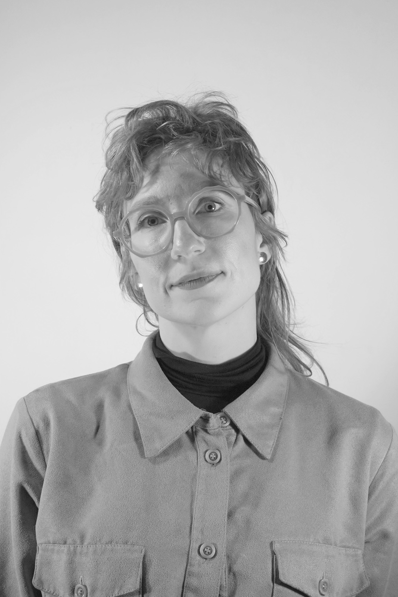

About

Cat Bluemke makes games, performances, and immersive experiences. Her site-responsive projects intervene in technological narratives of Canadian landscape, labour, and infrastructure. Her work has been presented at the New Museum and Rhizome, the 18th Venice Architecture Biennale, Singapore Art Museum, Milan Machinima Festival, and Fotomuseum Winterthur. She lives in Halifax, Nova Scotia, where she is Executive Director of Centre for Art Tapes and is building resources for experimental games and interactive media.
From 2019 to 2024, Bluemke partnered with the MacKenzie Art Gallery (Regina, SK, Treaty 4 Territory) to develop digital art programs. DAiR V1: Video Games by Artists (2020) was an online exhibition of works produced during the gallery's first Digital Artist in Residence program, featuring Hilarey Cowan, TJ Cuthand, Simon Fuh, Dallas Flett-Wapash, and Sandee Moore. Ender Gallery (2021–22), co-curated with Sarah Friend, explored Minecraft as a tool for art creation, hosting two-month residencies with Cat Haines, Simon M. Benedict, Huidi Xiang, and Travess Smalley. As Digital Exhibitions Consultant, Bluemke developed three curated exhibitions: There is no Centre (2023, curated by Katie Micak), Echoes from the Future (2023, curated by Tina Sauerlaender), and Wake Windows (2024, curated by Rea McNamara). She also developed the Digital Exhibition Toolkit and Art Installation Launcher (DETAIL), an open-source resource for digital art presentation.
Bluemke has collaborated with other arts organizations and curators to develop custom expanded reality exhibitions, including Hypercity (2022, as SpekWork Studio), an augmented reality exhibition for Long Winter featuring works by Cassraa, Cheyenne Rain LeGrande ᑭᒥᐊᐧᐣ, Malik McKoy, Vasuki Shanmuganathan, Shonee, hiba ali, Casey Koyczan, and Linda Zhang, curated by Mitra; and Geofenced (2021, as SpekWork Studio), a multisite augmented reality exhibition for InterAccess (Toronto) curated by Karie Liao, featuring works by Scott Benesiinaabandan, Adrienne Matheuszik, and Jenn E Norton.
CV
For art admin collaborations: cat@cfat.ca